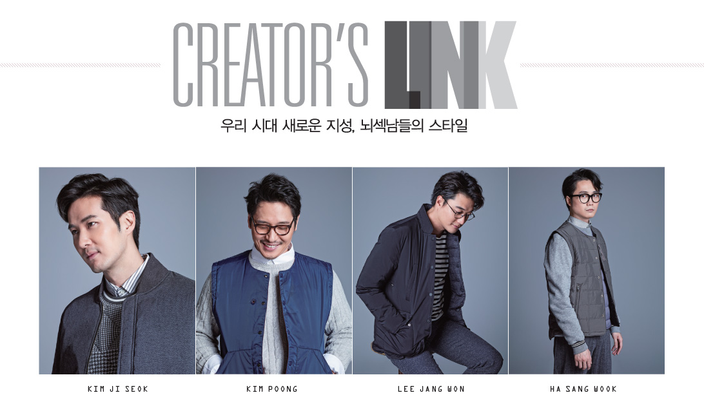

공유 #해시태그 [#빈폴링크 #모듈아우터]
자신의 뇌스타일을 확인한 후, SNS(페이스북, 카카오스토리, 트위터)에 #해시태그와 함께 공유해 주세요.
공유해 주신 분들 중 추첨을 통해 당신의 뇌가 풍부해지는 선물을 드립니다.


KIM JI SEOK Link
KIM JI SEOK
과거 사람들의 평가와 시선만 생각하던 때가 있었다. 나를 잃을까 두려워져 마음을 고쳐먹었다.
해외로 여행도 다니고, 안정감을 주는 러닝을 뛰고, 또 온전한 나만의 시간을 갖기 위해 이사도 했다.
무엇보다 중요한 건 '내 자신을 잃지 않는 것' 그러자 기회가 오더라. 재치있는 나를 선보일 기회.
'배우'라는 타이틀에 묶여 보여지는 멋에만 신경 쓸 게 아닌, 내가 갖고 있는 진짜 '멋'을 펼치고 있다.
기대해도 좋다. 난 끊임없이 변화하면서도 '나'를 잃지 않는 사람이다.
KIM POONG Link
KIM POONG
모든 것들이 새롭고 즐겁다. 재미있어 보이는 길을 앞에 두고 무작정 발을 떼지 않고 그 앞에서 고민 한다면, 그 고민은 후회와 미련으로 남기 마련이다.
나는 여전히 만화도 즐겁고, 요리도 즐겁다. 그리고 방송과 대중들의 관심 또한 즐겁다. 물론, 실패를 두려워 하지 않는 것은 아니다.
그저 내가 삶에 있어 높게 두는 가치는‘새로운 가능성’ 그리고 하지 못 해 남는 ‘미련’을 멀리하고자 하는 마음이다.